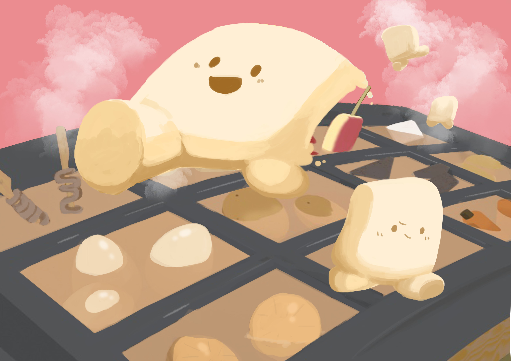

作品概要
コンセプトアート
|  | おでんの世界「はんぺんくん」を主人公とした物語のムービー作品から生まれたアクションパズルゲーム「いただき屋台村」のコンセプトアート。主人公のはんぺんくんが元気に動き回る描写でアクションゲームであることをイメージ。分裂したはんぺんくん「コペン」たちを操作してステージのギミックを解きつつゴールを目指す。 |
遊び方＆ルール
|
ステージ上に配置されたはんぺんくんを操作し、ゴールまで導くアクションパズルゲームです。 操作キャラを切り替えながらギミックを解き、ステージ内に閉じ込められているしろみちゃんを助けましょう。 ステージ上にはこんにゃくトランポリンやダイコンスイッチといったギミックが満載。 ステージが進むに連れてハシマシーンやタマゴ爆弾といった敵キャラも登場します。 おでんをモチーフとした独特な世界観のアクションパズルゲーム「いただき屋台村」を是非プレイしてみてください。 |
紹介動画
プロローグ＆ストーリームービー
|
おでんの屋台で暮らしている白はんぺんの妖精、「はんぺんくん」。 今日ものんびり暮らしています。 はんぺんくんには最近気になる子がいるみたい！ お相手は白はんぺんの女の子「しろみちゃん」。 長いまつ毛がとってもキュート！ 今日も平和にのんびりおでん屋台は営業中。 おや？実験好きの「ちくわくん」が今日も何か怪しい実験をしているみたい…？ |